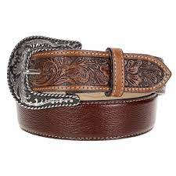
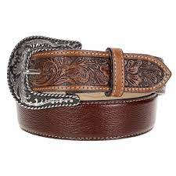

A sapataria do Arnaldo foi inaugurada em março de 1977 no bairro Jardim Santa Adélia, que durante este período vinha passando por grandes transformações. Pensando os costumes da época com relação a vestimenta, a população da cidade de São Paulo trajava social em diversos tipos de eventos, além do mercado de trabalho. Foi quando Arnaldo teve a ideia de comercializar diversos tipos de sapatos, bolsas e acessórios em couro.


 

Rua Forte do Leme, 52
Jd. Santa Adélia
São Paulo - SP
Telefone: (11) 3371-1279
Instagram: @sapataria_do_arnaldo